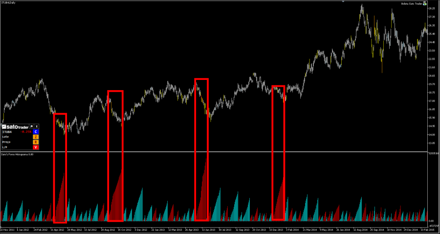

ACUMULAÇÃO
O mecanismo de acumulação de capital na Bovespa se dá pelo negócio de ações e de outros produtos financeiros online.
Funciona da seguinte forma: Algumas empresas disponibilizam ações no mercado (pequenas parcelas destas empresas) para serem vendidas, deste modo quem compra estas ações se torna sócio da empresa, logo tem direito a parte dos lucros da mesma, proporcionalmente à quantidade de ações que a pessgoa adquiriu.